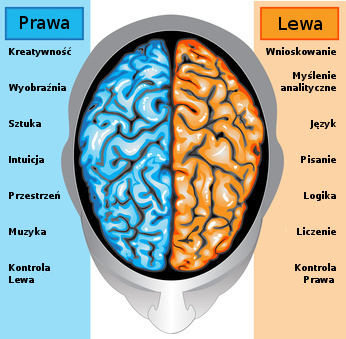
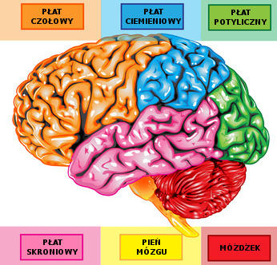

Mózg człowieka waży średnio od 1200 do 1400 g (u osób dorosłych). Mózg mężczyzny jest nieco cięższy od mózgu kobiety, ale ma to związek jedynie z masą ciała. Byli wprawdzie badacze, którzy próbowali udowodnić, że wielkość mózgu jest bezpośrednio związana z inteligencją, jednak ostatecznie teorie te legły w gruzach. Mimo że masa mózgu stanowi średnio 2% masy ciała, wykorzystuje on aż 20 % przechodzącego przez organizm tlenu, a jego zużycie energii jest 10 razy szybsze niż pozostałych narządów.
Nic dziwnego, w końcu pracuje bez ustanku. Nawet kiedy śpisz i pewne procesy ulegają spowolnieniu, mózg nie wyłącza się, ale wciąż działa. Kiedy zaczyna brakować mu substancji odżywczych, organizm najpierw zaczyna spalać własną tkankę tłuszczową, potem mięśniową a wszystkie inne organy muszą przejść na przymusową „dietę". Mózg człowieka jest najważniejszy i ma w organiźmie absolutny priorytet. Dlatego tak ważne jest zapewnienie umysłowi odpowiedniej dawki energii i świeżego powietrza.
Budowa anatomiczna Mózg zbudowany jest z dwóch części zwanych półkulami.
Przyjęło się uważać, że funkcjonalnie lewa półkula odpowiedzialna jest za to, co ustrukturalizowane: język, wzory, układy. Zajmuje się przede wszystkim analizą i nastawiona jest na cechy lokalne. Półkuli prawej bliższe są: przestrzeń, trójwymiar, muzyka, rytm. Jest bardziej syntetyczna i nastawiona na cechy globalne.
Dziś wiadomo, że obszary mózgu mogą wzajemnie przejmować swoje funkcje a obie półkule współpracują ze sobą i uzupełniają się we wszystkich procesach psychicznych. Pomostem między półkulami jest ciało modzelowate – wiązka aksonów (włókien neuronów) umieszczona poprzecznie w szczelinie pomiędzy półkulami, zapewniająca przepływ informacji między nimi.
Kora mózgowa Zewnętrzną część półkul mózgowych stanowi kora mózgowa, zwana korą nową, ponieważ stanowi najnowsze osiągnięcie ewolucji.
Wyróżnia się w niej cztery płaty mózgowe:
- potyliczny (occipital lobe)
- ciemieniowy (parietal lobe)
- skroniowy (temporal lobe)
- czołowy (frontal lobe)
Mózgowie najważniejsza, centralna część ośrodkowego układu nerwowego u kręgowców (w tym u człowieka) znajdująca się w czaszce. Najważniejsze jego funkcje to sterowanie, nadzorowanie działania, homeostaza organizmu (m.in. częstość akcji serca, ciśnienie tętnicze krwi, równowaga wodno-elektrolitowa, temperatura ciała), a także wyższe funkcje nerwowe (funkcje poznawcze, popędowe, pamięć i uczenie się).
Stopień skomplikowania budowy mózgowia odzwierciedla zazwyczaj stopień rozwoju ewolucyjnego organizmu. U ssaków mózgowie składa się z pięciu zasadniczych części. Są to:
- kresomózgowie (telencephalon)
- międzymózgowie (diencephalon)
- śródmózgowie (mesencephalon)
- tyłomózgowie wtórne (metencephalon)
- rdzeniomózgowie (rdzeń przedłużony) (myelencephalon lub medulla oblongata)
Klinicyści często używają uproszczonego podziału:
- półkule mózgu
- pień mózgu
Wyróżnia się trzy opony mózgowia (meninges encephali):
- opona twarda mózgowia (dura mater encephali) – najbardziej zewnętrzna
- pajęczynówka mózgowia (arachnoidea encephali) – środkowa
- opona miękka mózgowia (pia mater encephali) – bezpośrednio przylegająca do mózgowia c
- w kresomózgowiu dwie komory boczne (czyli komora I oraz II),
- w międzymózgowiu komora III (połączona z komorami bocznymi),
- w rdzeniomózgowiu komora IV (która łączy się z komorą III w śródmózgowiu wodociągiem Sylwiusza).
W mózgowiu występują komory mózgowia (ventriculi cerebri):
Komory mózgowia wypełnia płyn mózgowo-rdzeniowy (liquor cerebrospinalis) – wodnista, przejrzysta, zasadowa ciecz (wypełnia również kanał ośrodkowy rdzenia kręgowego, jamę podtwardówkową i podpajęczynówkową oraz zbiorniki podpajęczynówkowe).
Źródło: http://www.dlamozgu.pl/mozg, http://pl.wikipedia.org/wiki/M%C3%B3zgowie